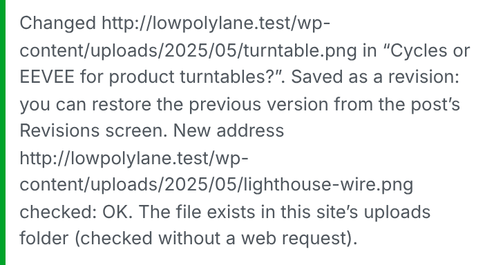

Linkrounds, a broken link checker for WordPress
Finds broken links and images from your own server, and calls a link Broken only after it fails twice, an hour apart. No account, no credit card, no link limit.
![Tools > Linkrounds on the demo blog with only the free plugin active, after the second checks: 'Last scan finished November 16, 2026 7:32 pm: 63 different addresses checked, used in 70 places.', the line '1 address looks broken, used in 3 places. It failed once (not found, gone or no such domain). Linkrounds checks it again by itself after November 16, 2026 9:29 pm (in 53 minutes) and calls it Broken only if it fails again. You do not need to scan again, and you can fix it now. Show all 3 places', the counts All (70), Broken (7), Waiting for second check (3), Redirected (7), Inconclusive (9), OK (47), Ignored (0), the search box and post-type filter, Bulk actions, and the first row: a docs.blender.org manual address in full with its link text, the post it is in with Edit and View, a red Broken badge with 404 and 'Page not found (404).', last checked 8:29 pm](img/results-full.png)
Linkrounds is free: download linkrounds-1.2.3.zip (72 KB) and upload it under Plugins > Add New Plugin.
Pro: $19 once, up to 3 sites Buy for $19
Pro checks your site on a schedule and emails you what broke, like this:
Subject: [Low Poly Lane] Linkrounds: 5 addresses broke since the last report (used in 7 places) 1. https://docs.godotengine.org/en/stable/getting_started/step_by_step/your_first_game.html Why: Page not found (404). Used in 3 places: - On: “Our first Godot import: a low-poly lighthouse” … - In a navigation menu, item “Godot tutorial” - In the navigation menu “Main”, link “Godot tutorial” 2. http://lowpolylane.test/wp-content/uploads/2025/05/turntable.png …
See the whole email. Pro is an add-on: install the free plugin first (if you install Pro first, it waits and shows you where to get the free one). Polar checkout · download after payment · no renewal · no licence check · every Pro update included · 14-day refund · details. More than 3 sites: $79 once, by email only for now (support@ochrestack.com).
Four answers, in plain words
- Broken: the page is not found (404) or gone (410), or the domain does not exist, and the same thing happened again when Linkrounds checked a second time, at least an hour later.
- Redirected: the address forwards to another one that works, and you see where it ends. If it ends on the site's home page or a search page, which often means the page was removed, it says so.
- Inconclusive: the other site refused the check, wanted a login, asked us to slow down, had an error or did not answer. Linkrounds can't tell if such a link works, so it never calls it Broken.
- OK: the link works.
Straight after the first scan nothing is Broken yet. The screen says how many addresses look broken, when it checks them again by itself, and that you can fix them now.
![Tools > Linkrounds on our 300-post test archive straight after the first scan: 'Last scan finished November 16, 2026 7:39 pm: 708 different addresses checked, used in 2,702 places.', then '71 different addresses look broken, used in 251 places. They failed once (not found, gone or no such domain). Linkrounds checks them again by itself from November 16, 2026 8:36 pm (in 57 minutes) and calls Broken only those that fail again. You do not need to scan again, and you can fix them now. Show all 251 places', the counts All (2,702), Broken (0), Waiting for second check (251), Redirected (49), Inconclusive (251), OK (2,402), and two php.net rows marked Inconclusive 404, 'First failure: it is checked again after November 16, 2026 8:36 pm and called Broken only if it fails again.'](img/first-scan-archive.png)
Fixes you can undo
- Unlink removes a link and keeps its words. Edit address changes one link, and the new address is checked straight away.
- Tick rows and use Bulk actions: only the rows you ticked change. On our 300-post test archive, ticking 2 of the 20 rows on screen changed exactly 2 links; every other byte of every post stayed as it was.
- Every fix is saved as a normal WordPress revision, so you can put the old version back from the post's Revisions screen.


Watch it work
Linkrounds Pro
- Scheduled scans: daily, weekly or monthly, at the hour you choose, in your site's time zone.
- An email report after each scheduled scan, to the addresses you choose: each address that broke since the last report, once, with every page it is on, why it failed, and a link to fix it.
- Send a test email tells you straight away whether your site can send mail. If a report is ever refused, the Schedule & email tab says when and why, and those links go into the next report.
- Export CSV of the results you are looking at, for a client or an editor, safe to open in a spreadsheet.
- One payment. No renewal, no licence check, and nothing stops working.
The whole email from the demo blog
Pro 1.2.0 on our demo blog, whose mail goes to a file because it has no mail server. The daily scan was set for 9:00 pm; it started on the first visit after that (9:01 pm) and finished at 9:03 pm. The email followed by itself at 10:10 pm, once the links that had failed had their second check. The old Godot tutorial is linked from a post and from both menus, so it is listed once, with its 3 places.
To: studio@lowpolylane.test
Subject: [Low Poly Lane] Linkrounds: 5 addresses broke since the last report (used in 7 places)
Linkrounds finished a scheduled check of every link on Low Poly Lane (http://lowpolylane.test/) on November 16, 2026 9:03 pm.
This is the first report, so it lists every address that is broken now: 5, used in 7 places. Each address is listed once, with every place it is used.
1. https://docs.godotengine.org/en/stable/getting_started/step_by_step/your_first_game.html
Why: Page not found (404).
Used in 3 places:
- On: “Our first Godot import: a low-poly lighthouse” http://lowpolylane.test/our-first-godot-import-a-low-poly-lighthouse/
Link text: “the “your first game” tutorial”
- In a navigation menu, item “Godot tutorial”
- In the navigation menu “Main”, link “Godot tutorial”
2. http://lowpolylane.test/wp-content/uploads/2025/05/turntable.png
On: “Cycles or EEVEE for product turntables?” http://lowpolylane.test/cycles-or-eevee-for-product-turntables/
Link text: “Cycles or EEVEE for product turntables?”
Why: The file is not in this site’s uploads folder.
3. https://github.com/WordPress/twentytwelve
On: “Moving the studio site to a block theme” http://lowpolylane.test/moving-the-studio-site-to-a-block-theme/
Link text: “development repository”
Why: Page not found (404).
4. https://docs.blender.org/manual/en/latest/addons/import_export/scene_gltf2.html
On: “Where to ask when Blender misbehaves” http://lowpolylane.test/where-to-ask-when-blender-misbehaves/
Link text: “the glTF add-on page in the manual”
Why: Page not found (404).
5. https://docs.blender.org/manual/en/latest/files/import_export/scene_gltf2.html
On: “Resources” http://lowpolylane.test/resources/
Link text: “glTF import and export”
Why: Page not found (404).
See and fix them: http://lowpolylane.test/wp-admin/tools.php?page=linkrounds&category=broken
You get this email because your address is set under Tools > Linkrounds > Schedule & email. Change the addresses or turn the schedule off there.
Tested on real WordPress sites
- A 300-post archive with 708 different addresses in 2,702 places: Scan now took 2 min 47 s to 3 min 30 s over four runs. All 71 addresses that failed once returned 404 when we opened them by hand, and all 71 became Broken at their second check, in both runs we checked by hand. False Broken: 0.
- Our demo blog of a small 3D studio: 63 addresses in 70 places. Every address it called Broken (seven web pages and an image we had deleted) was really gone when we opened it by hand, and the sites that refused the check stayed Inconclusive. Pro's daily scan sent the email by itself.
- Every picture on this page and in the film is a screenshot of one of those two sites. How we tested, with every number.
Details
- Buying Pro: secure checkout by Polar, which delivers
linkrounds-pro.zipafter payment. The receipt also carries a licence key; keep it as proof of purchase, because Pro never asks for it. $19 once for up to 3 sites (a launch price; the list price is $29). Unlimited sites: $79 once, by email only for now. If it doesn't work as described and we can't fix it, email us within 14 days for a full refund (terms). - Updates: every future Pro update is included at no charge. Download it from your purchase email or Polar's customer page.
- Requires WordPress 6.5 or newer and PHP 7.4 or newer. Linkrounds 1.2.3 and Pro 1.2.0 were tested on WordPress 6.5.14 and 7.1.4, each with PHP 7.4 and 8.3. Not tested: other WordPress or PHP versions (including PHP 8.4), and multisite in a live install.
- Not checked in version 1: page-builder layouts stored outside the post content, custom fields, widgets, comments and theme options. All limits.
- GPL-2.0-or-later. The full, readable source of each plugin is inside its zip.
Privacy
Your own server checks each linked address. Nothing about your site, your users or your content goes to us or to anyone else: no account, no tracking, no licence or update check. Pro's emails go only to the addresses you set. Exactly what is sent.
Install
- Download linkrounds-1.2.3.zip. Do not unzip it.
- In WordPress, open Plugins > Add New Plugin > Upload Plugin, choose the zip, Install Now, Activate.
- Open Tools > Linkrounds and click Scan now.
- For Pro, upload
linkrounds-pro.zipthe same way, then open Tools > Linkrounds > Schedule & email.
The one-page quick start covers the first scan, fixing and undoing, exclusions and Pro. Support: support@ochrestack.com; bugs and feature requests welcome.
Questions
Do I need an account, an API key or a credit card for the free plugin? No. It runs inside your WordPress site. There is nothing to sign up for and no link limit.
Is Pro a subscription? No. $19 once for up to 3 sites. There is no renewal and no licence check, nothing stops working, and every future Pro update is included.
A link works in my browser. Why is it Inconclusive? Many sites refuse automated checks, ask for a login or slow down busy visitors. Linkrounds can't tell whether such a link works, so it says so instead of calling it Broken.
Does it need my site to have visitors? WordPress runs background work when someone visits. On a quiet site, such as a staging copy, keep the Linkrounds screen open while it scans and it keeps going by itself. Pro's scheduled scans start on the first visit after the hour you chose.